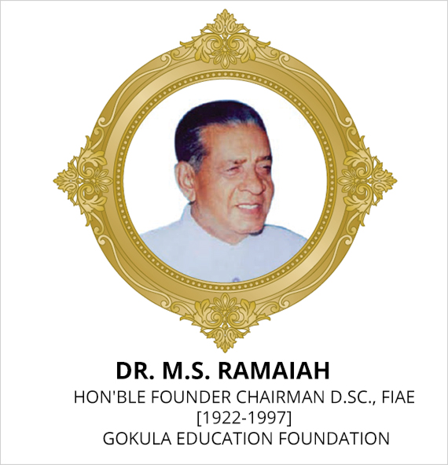

Mission
Ramaiah Polytechnic strives to deliver global quality technician education and provides an environment that enables students to grow academically and to meet to current and future challenges independently.
Quality Policy
We at Ramaiah Polytechnic, Bangalore, are committed to providing and enhancing student and interested party satisfaction by providing teaching and related services to the students. In this direction we are also committed to:
a) Continual improvement in effectiveness of services and activities.
b) Comply with all the requirements as applicable to the organizational services provided by it.
c) Enhance the knowledge and motivation level of our staff to prompt them to deliver best of their services to the student community.
Established in the year 1997 by Dr.M.S.Ramaiah Founder Chairman Gokula Education Foundation (G.E.F). The Polytechnic has independent identity and offer Diploma in respective field. This Institute provides excellent opportunity to become technically qualified and get suitable placement in Industries or for those who are enterprising can venture into small scale Industries. Also these Technician courses serve as a bridge for higher Technical Education. The Polytechnic is located in a beautiful serene atmosphere in the midst of Hightech City, Bengaluru known for Salubrious Climate completely away from all disturbances. The institution has independent accommodation spread over in four floors. The Polytechnic has spacious class rooms, well equipped Laboratories and workshops large no. of latest Computers, meets the curriculum needs of all branches. Broad Band Connectivity has been made available for the benefit of students and staff. A well equipped conference hall is in its place to facilitate conducting seminars, group discussions and presentation activities. Website of the college provides additional first hand information right from Admission to pursuing education for three years in the college. In addition to the above facilities in the Polytechnic, the proximity of famous Ramaiah Institute of Technology has placed the Polytechnic in an enviable position as the latest technological facilities established in various labs of the college are open for the use of Polytechnic students whenever required. In addition the experts in the various field from the college are available at any time for the benefit of Polytechnic students. The courses offered in the polytechnic are recognized by the All India Council for Technical Education (AICTE), New Delhi and approved by Government of Karnataka. The polytechnic provides high quality competence outcome based Formal, Non-Formal and Continuing education training to meet the needs of the Industry, Business and Community.
The Polytechnic offers career guidance & placement facilities to students. Also, career guidance sessions, Presentation skills, mock interviews, workshops, seminars and group discussion seminars are conducted for the benefit of students. The polytechnic has a full-fledged placement cell, which arranges campus interviews and / or provides facilities to students to attend interviews at the industries. The Polytechnic is widening its base to meet the human resource needs of the industries.
Computers are part of almost every aspect of our lives like Education, Banking, Healthcare, Shopping, Travel, Video Games, etc. The Computer industry is one of the fastest growing segments and improvise the same with new rapid growing technologies. Computer Science teaches students how to be innovative and how to solve problems & develop programs.
The department of Electronics and Communication Engineering aims at imparting students with strong 'technical skills in the design, development and manufacturing of electronic devices and systems. To ensure high standards of learning, the Dept. has well-equipped laboratories and extremely talented and experienced faculty.
This Branch of Engineering offers opportunity to attain proficiency in Mechanical Engineering through theoretical study as well as practical in general engineering subjects during the first two semester. This will be followed by indepth skill development in specialized areas like Computer Numerical Control, Mechatronics, Metal Casting, Computer Integrated Manufacturing etc. They also learn to handle different machine tools, jigs, fixtures and measuring instruments. In the final year the students takeup interesting projects to apply the concept learnt in earlier semesters and become "Industry Ready" to takeup competent job or pursue higher studies.
Hands on training aspects of construction including training at various on going Project Sites for understanding field applications for Enhanced Learning. The need of Civil Engineering personnel with computer skills is on the increase in the field of Civil Engineering. The course also deals with Environmental Engineering concepts, in addition to study of different types of materials involved, Behavioural Pattern, Design Concepts of different types of Structures, etc.

During the course students study subjects like Mechatronics, Transmission, Distribution and Utilization of power , Telecommunication, Control systems, Microprocessor, Integrated circuits etc. They also take up several small projects, one major project and undergo in-plant training. Several guest lectures are arranged to provide additional knowledge.

To develop analysis, communication, presentation skills on fashion, Fashion trends, Merchandising & Fashion growth. This course encourages students to develop skills in product development by using design elements, from procurement of fabric to its creative conversion into products which includes Men's, Women's, Children's, accessories & house hold articles.